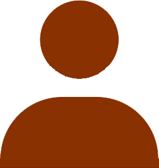

<ion-content class="main-container">
  <ion-toolbar class="main-container" style="margin: 0; padding: 0">
    <ion-buttons slot="start">
      <ion-menu-button style="color: var(--ion-color-amber)"></ion-menu-button>
    </ion-buttons>
    <ion-img
      src="../../assets/images/logo.png"
      style="
        width: 150px;
        height: auto;
        margin-left: 22.5%;
        margin-top: 5%;
        margin-right: 0;
        margin-bottom: 0;
        padding: 0;
        display: inline-block;
      "
    ></ion-img>
    <ion-img
      src="../../assets/images/search-amber.png"
      style="
        width: 35px;
        height: auto;
        margin-left: 15%;
        margin-right: 5%;
        margin-top: 7%;
        padding: 0;
        display: inline-block;
        position: absolute;
      "
    ></ion-img>
  </ion-toolbar>

  <ion-img
    src="../../assets/images/logo.png"
    style="margin: 0; padding: 0; background-color: aqua"
  ></ion-img>
  <div class="store-pic">
    <ion-avatar style="--border-radius: 5px">
      
    </ion-avatar>
  </div>
  <p style="margin-left: 25%; margin-top: 3%;">Item Avatar</p>
</ion-content>
